ESPHome Altherma + Emoncms Setup Guide
This guide walks you through connecting ESPHome Altherma to Emoncms in Home Assistant for long-term heat pump monitoring. Both local and remote setups are covered — starting with local.
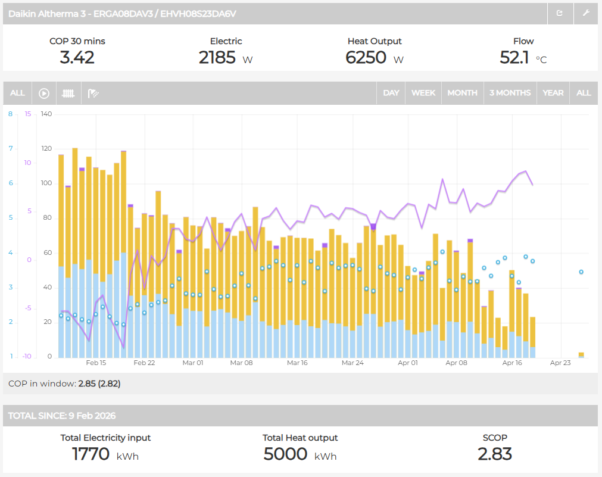
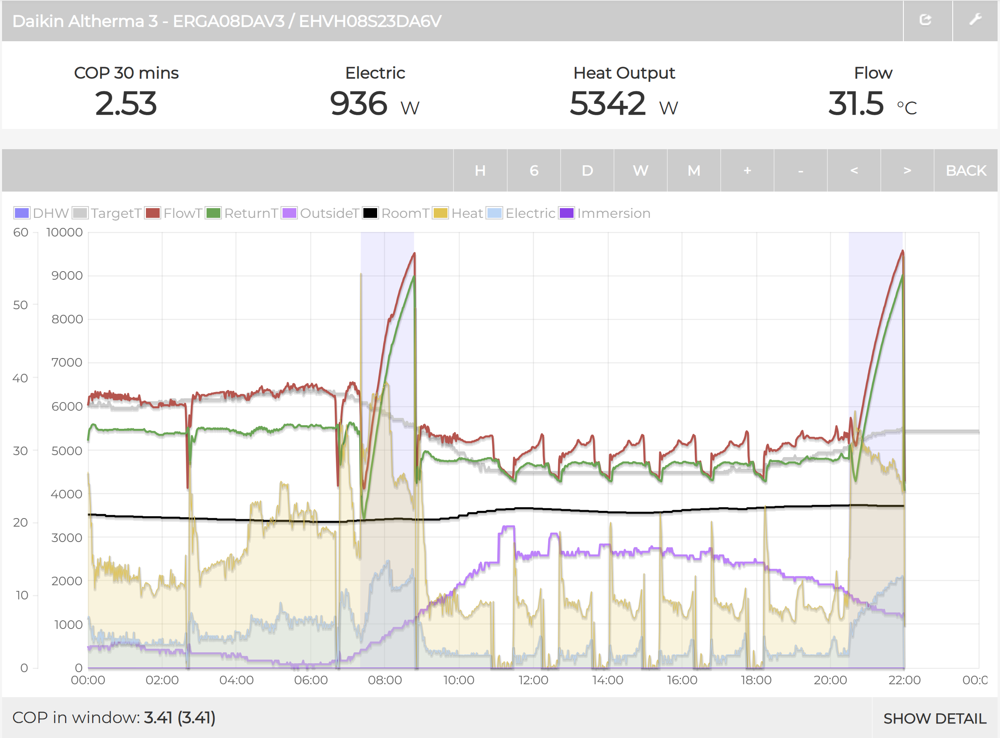
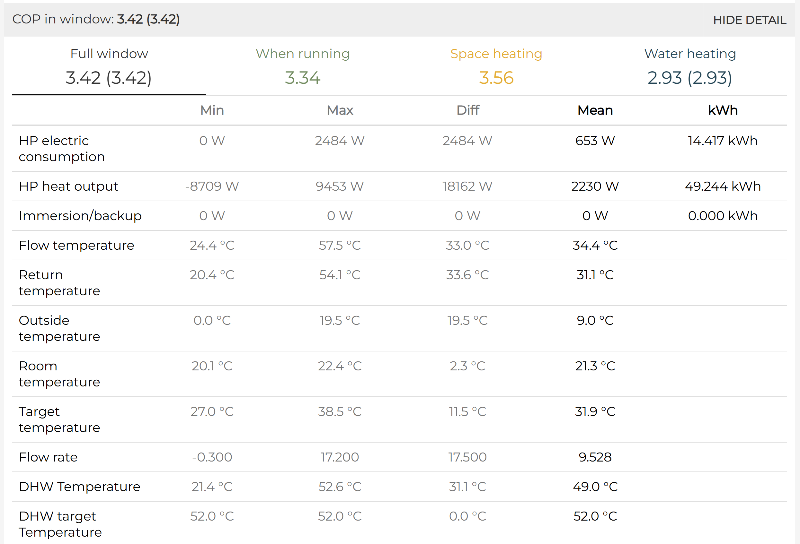
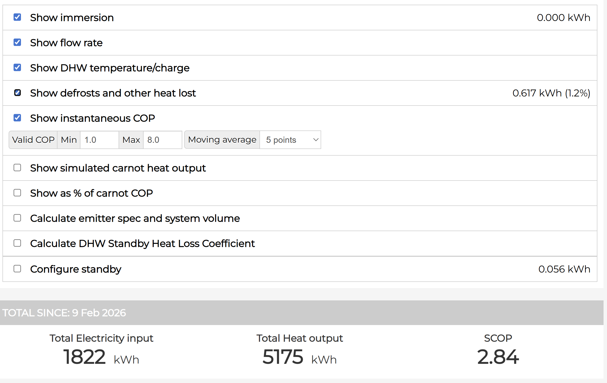
Why use Emoncms with your heat pump?
Home Assistant is excellent for real-time monitoring and control, but it wasn’t built for analyzing long-term heat pump data. Emoncms fills that gap.
What you gain:
- Energy dashboards the built-in MyHeatpump app gives you a dedicated heat pump performance dashboard with COP, heat output, electric consumption, and temperatures over time.
- Long-term data feeds are stored efficiently and queryable over months and years, well beyond how most Home Assistant instances are configured.
- Calculated feeds Emoncms can derive values like heat output in watts and cumulative kWh directly from raw sensor data, without extra automations in Home Assistant.
- Open standard your data stays on your own hardware (local install) or your own Emoncms account (remote), with no vendor lock-in.
- Performance monitoring tracking COP (Coefficient of Performance = heat out ÷ electricity in) over time lets you spot degradation, validate refrigerant charge, and compare heating seasons.
Typical use case: You have a Daikin Altherma with ESPHome Altherma reading sensors over UART, and you want to know: is my heat pump actually running efficiently? How much heat did it produce last month compared to how much electricity it used? Emoncms answers those questions out of the box.
Install Emoncms as a Home Assistant Add-on
This is only required for running Emoncms locally.
Go to Settings → Add-ons → Add-on Store.
Add the Emoncms repository by clicking the three-dot menu (…) in the upper right corner and selecting Repositories.
Add: https://github.com/Open-Building-Management/emoncms
Then use the … menu again and select Check for updates.
Search for emoncms and install it.
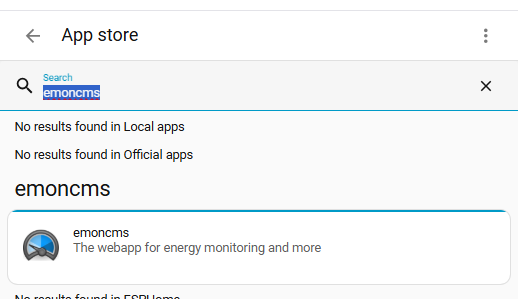
From the add-on info screen, open the Web UI. You may also want to enable Show in sidebar.
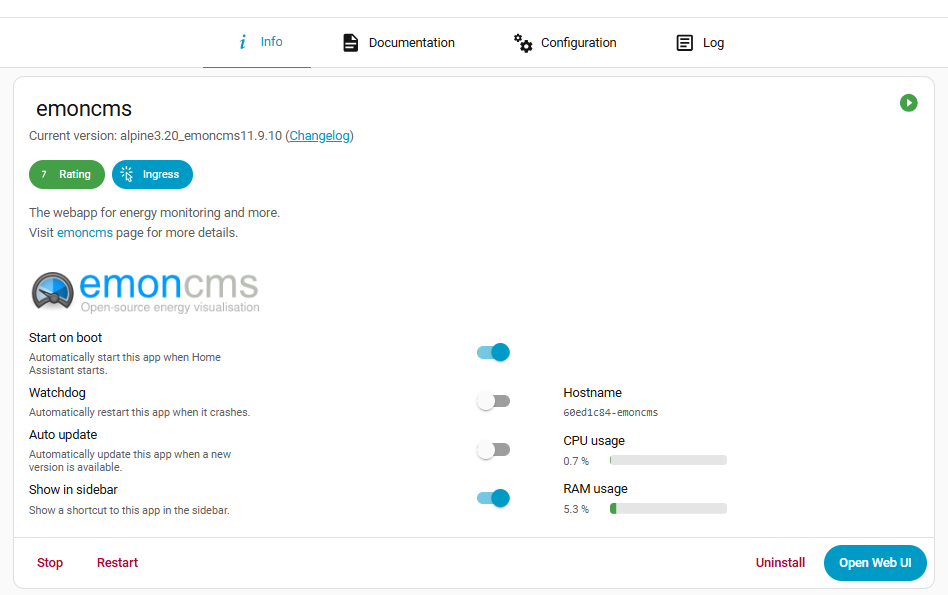
Get Your Emoncms API Key
In Emoncms, go to My Account and copy the Read & Write API Key — you will need it in the next step.
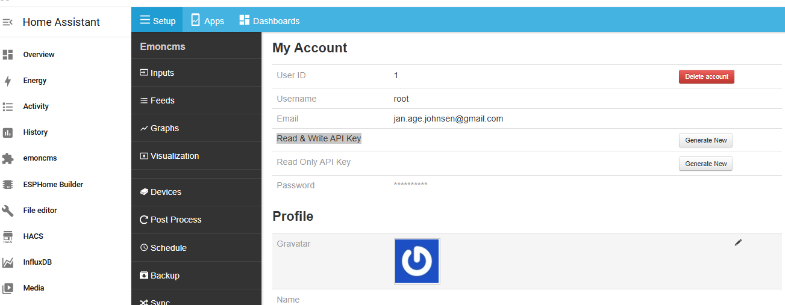
Configuration in Home Assistant
Configure the rest_command
This sends sensor data from Home Assistant to Emoncms.
Add the following to /homeassistant/configuration.yaml (you can use the File Editor add-on):
rest_command:
emoncms_post:
url: "https://YOU_HOME_ASSISTANT_IP:7443/input/post.json?apikey=YOUR_KEY&node="
method: POST
verify_ssl: false
payload: "json="
headers:
Content-Type: application/x-www-form-urlencoded
Replace YOUR_HOME_ASSISTANT_IP and YOUR_KEY with your actual values.
After saving, do a Quick Reload or Restart Home Assistant for the change to take effect.
Test the rest_command
Go to Settings → Developer Tools → Actions, select rest_command.emoncms_post, and test with:
action: rest_command.emoncms_post
data:
node: test
payload: '{"test":1}'
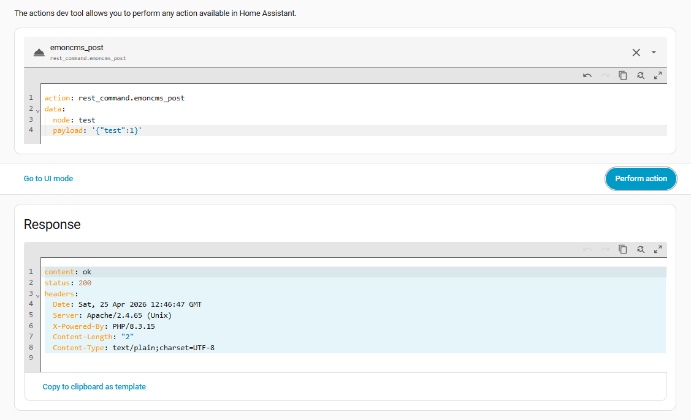
A successful response returns ok. You can confirm by opening Emoncms — the test data should appear under Inputs.
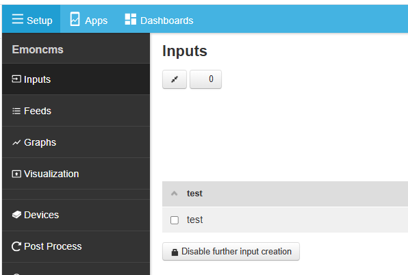
Install the emonncms_heatpump_sender Blueprint
The blueprint creates a Home Assistant automation that collects heat pump sensor readings on a fixed schedule and posts them to Emoncms via the rest_command configured earlier. It runs every 30 seconds by default and skips any sensors that report unknown or unavailable, so a missing sensor won’t break the whole payload.
Two values are calculated inside the automation rather than read directly from a sensor:
heatpump_elec— electric use in watts, computed asINV primary current (A) × Voltage (N-phase) (V).immersion_elec— backup heater power in watts, summed from the BUH Step 1 and Step 2 binary sensors and their configured power values.
Go to Settings → Automations & Scenes → Blueprints → Import Blueprint and use this URL:
https://raw.githubusercontent.com/jjohnsen/esphome-altherma/refs/heads/main/homeassistant/blueprints/emonncms_heatpump_sender.yaml
After import click on the three dots and select +Create Automation:
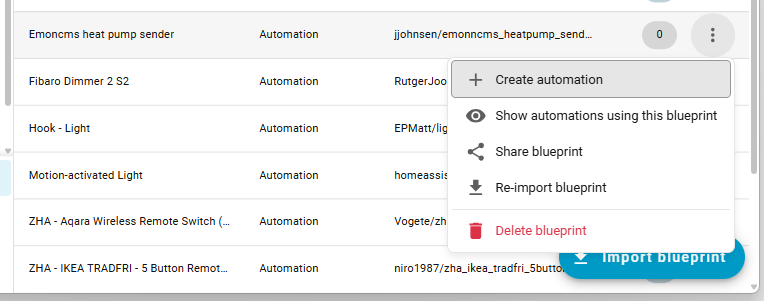
Blueprint inputs
| Input | Typical ESPHome Altherma entity | Notes |
|---|---|---|
| Emoncms node | — | Name used in Emoncms. Default: ESPHome_Altherma |
| Interval in seconds | — | Default /30 (every 30 s). Must match the feed interval in Emoncms |
| heatpump_primary_current | INV primary current (A) | Combined with voltage to calculate heatpump_elec |
| heatpump_voltage | Voltage (N-phase) (V) | Combined with current to calculate heatpump_elec |
| heatpump_flowT | Leaving water temp. after BUH (R2T) | Used to derive heatpump_deltaT and heat output |
| heatpump_returnT | Inlet water temp. (R4T) | Used to derive heatpump_deltaT |
| heatpump_outsideT | Outdoor air temp. (R1T) | — |
| heatpump_roomT | Room temperature | Typically a separate sensor inside your home |
| heatpump_targetT | LW setpoint (main) | — |
| heatpump_flowrate | Flow sensor (l/min) | Used to calculate heat output in Emoncms |
| heatpump_dhw | 3-way valve (On:DHW / Off:Space) | Binary sensor — sent as 1 (DHW) or 0 (space heating) |
| heatpump_dhwT | DHW tank temp. (R5T) | — |
| heatpump_dhwTargetT | DHW setpoint | — |
| BUH Step 1 | BUH Step1 | Binary sensor for backup heater stage 1 |
| BUH Step 1 power | — | Watts to add when Step 1 is on. Default: 2000 W |
| BUH Step 2 | BUH Step2 | Binary sensor for backup heater stage 2 |
| BUH Step 2 power | — | Watts to add when Step 2 is on. Default: 4000 W |
The Interval in seconds here should match the interval you set on each Emoncms feed.
Configure all the blueprint inputs. ESPHome Altherma should already be running and will populate most of the sensor fields.
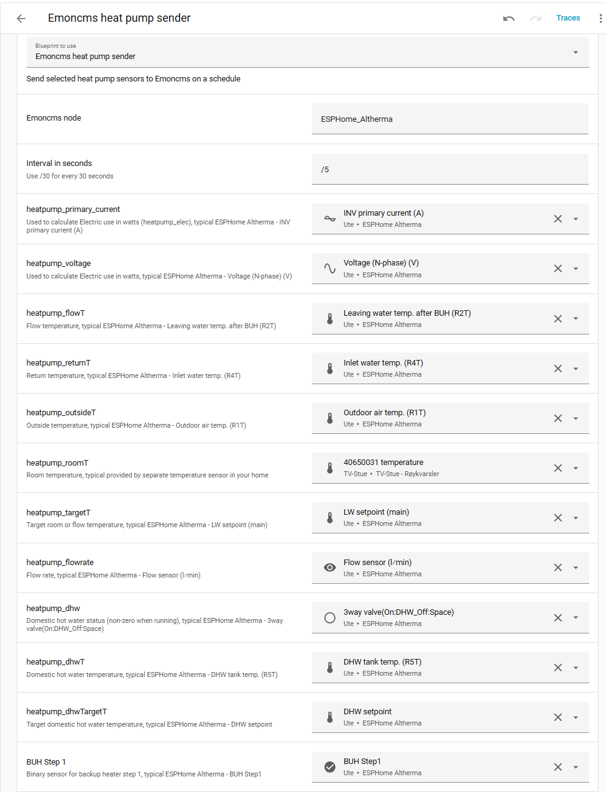
Configure Emoncms
Emoncms Inputs
heatpump_elec
This input must produce both electric use in watts and cumulative electric use in kWh.
Click the wrench icon and under Process, ensure Log to feed is selected.
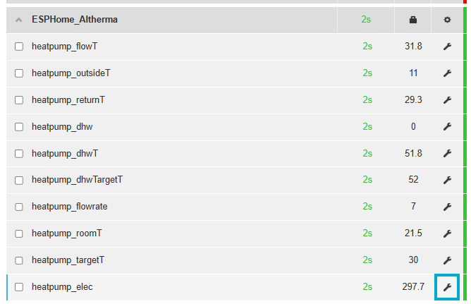
Set the interval to match the Interval in seconds configured in the Emoncms heat pump sender automation (default: 30 s).
Click Add:
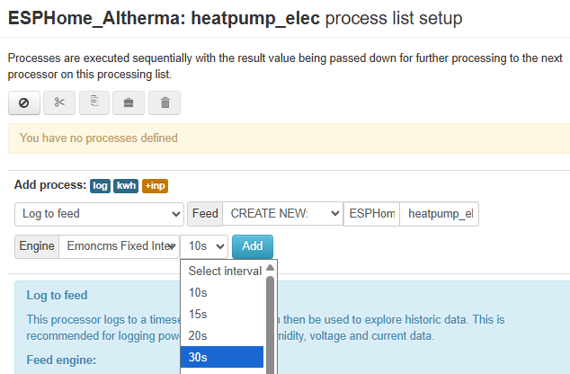
To add the cumulative feed, select Power to kWh, set the process name to heatpump_elec_kwh, set the correct interval, and click Add.
Your heatpump_elec process list should now look like this:
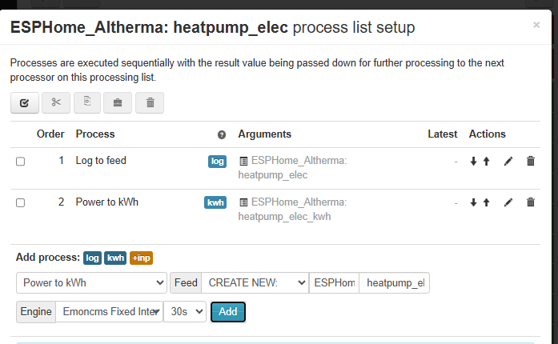
heatpump_heat
Heat output in watts is calculated from flow rate and temperature difference using:
Heat (W) = flowrate (l/min) × ΔT (°C) × 69.78
Where: 69.78 = specific heat of water (4.187 J/g·°C) × 1000 g/L ÷ 60 s/min
Step 1: Create heatpump_deltaT
heatpump_deltaT = flow temperature − return temperature.
It does not exist as a direct sensor, so we derive it inside Emoncms.
Open the heatpump_flowT input and configure the following process steps:
- Log to feed use the default name, set the correct interval, click Add.
- - input select
heatpump_returnTas the input, click Add. - Click the log button next to Add process, change the name to
heatpump_deltaT, set the correct interval, and click Add.
Click Changed, press to save, then Close.
The process list should look like this:
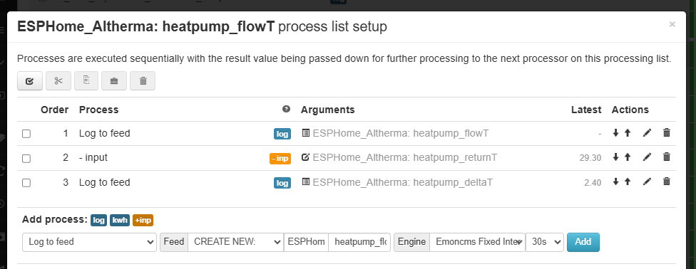
Step 2: Create heatpump_heat
Open the heatpump_flowrate input and configure the following process steps:
- Log to feed set the correct interval and click Add (this logs the raw flow rate).
- × feed select
heatpump_deltaT, click Add. - Calibration: × enter
69.78, click Add. - Click log next to Add process, set name to
heatpump_heat, set the correct interval, click Add (this is the heat output feed in watts). - Click kWh next to Add process, set name to
heatpump_heat_kwh, set the correct interval, click Add (this is the cumulative heat feed).
Click Changed, press to save, then Close.
The process list should look like this:
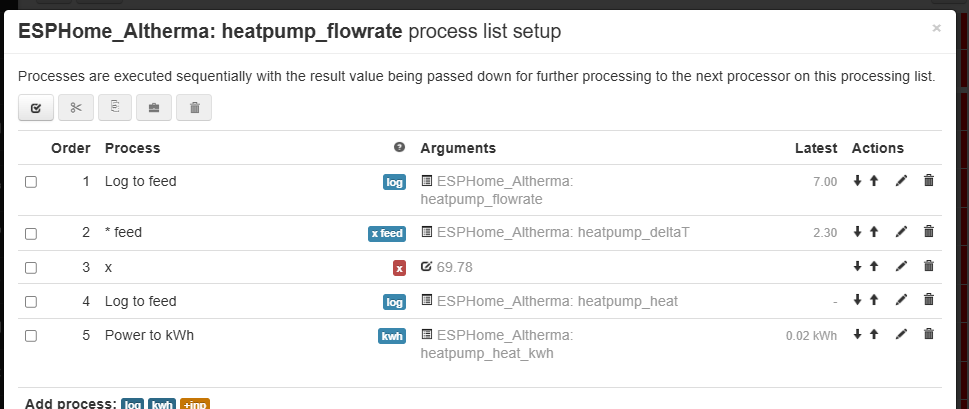
Remaining inputs
The remaining inputs all follow the same pattern:
heatpump_returnTheatpump_outsideTheatpump_roomTheatpump_targetTheatpump_dhwheatpump_dhwTimmersion_elec
For each: click the wrench, select Log to feed, set the correct interval, and click Add.
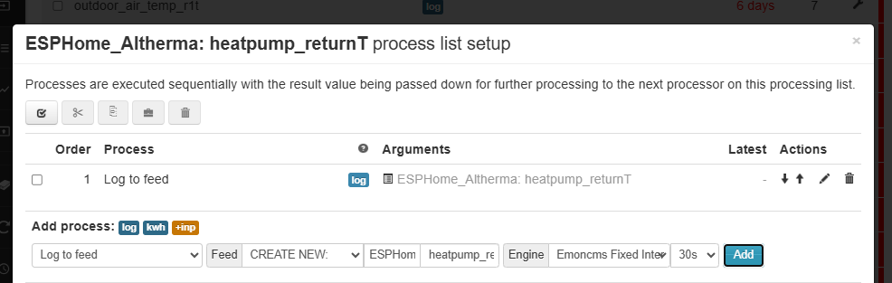
Verify Inputs
The complete input list should look like this:
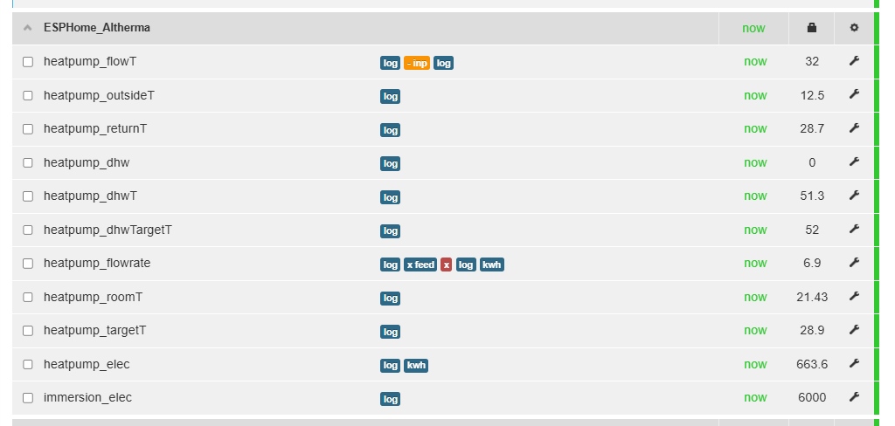
Configure Feeds
Set the correct units for each feed:
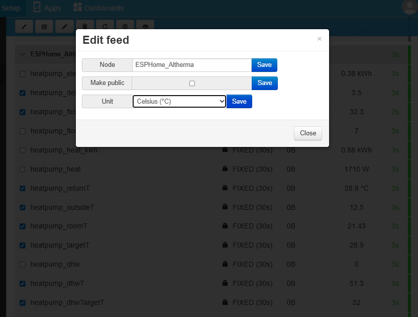
Verify
The complete feed list should now look like this:
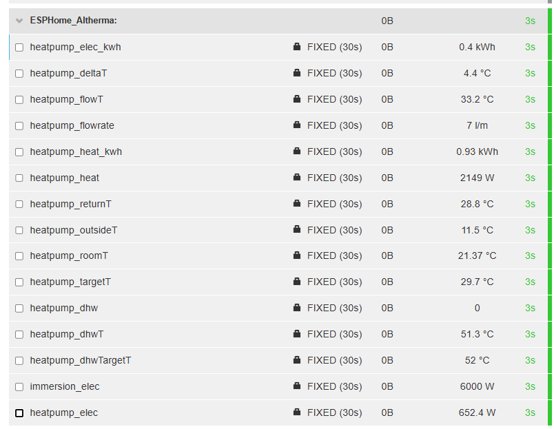
Configure the My Heatpump app
The My Heatpump app is an Emoncms built-in app purpose-built for heat pump performance monitoring.
Setup
From Apps -> +New select My Heatpump.
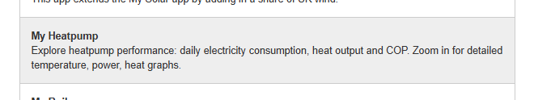
Map the app inputs to the feeds we just created:
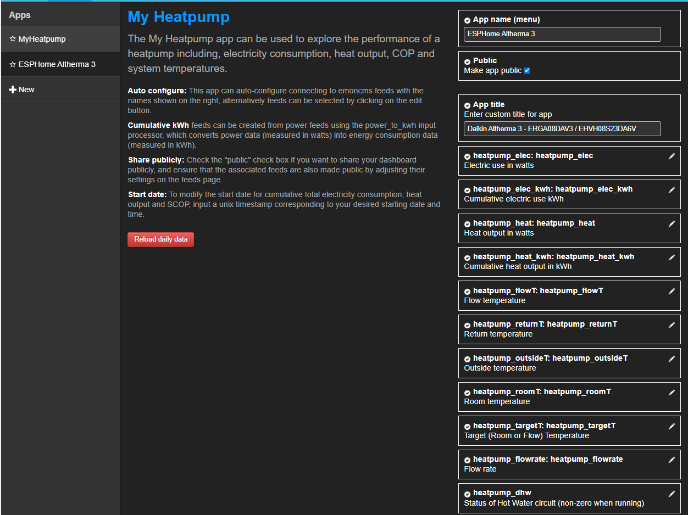
Check Enable daily pre-processor to split the daily view into space heating and domestic hot water, giving you separate COP and energy figures for each mode.
Click Launch App and enjoy ;)
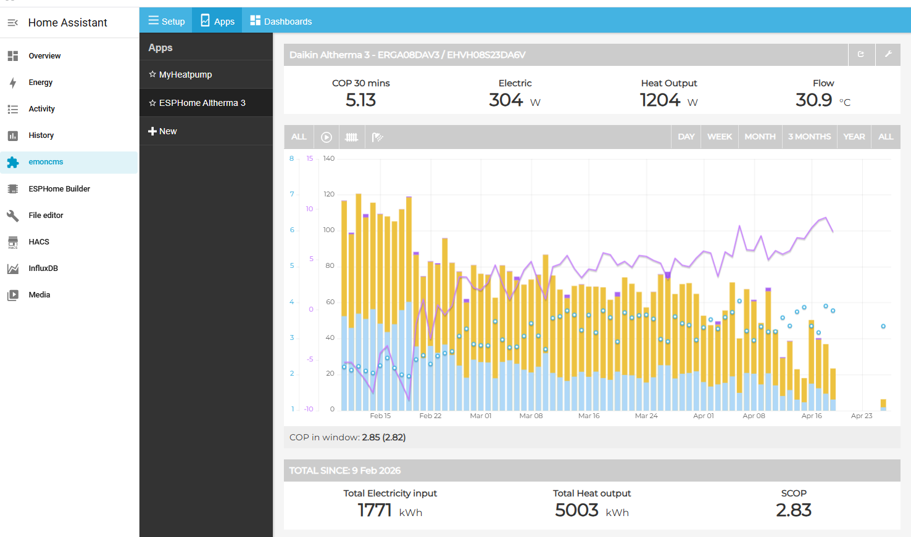
Tips
- Click on a bar in the daily chart to jump to the power chart for that day.
- Click COP in the stats panel to toggle between COP 30 min (smoothed average) and COP Now (instantaneous).
- For deeper analysis, the app also tracks data quality percentages for each feed, so you can see if gaps in data are affecting your COP figures.